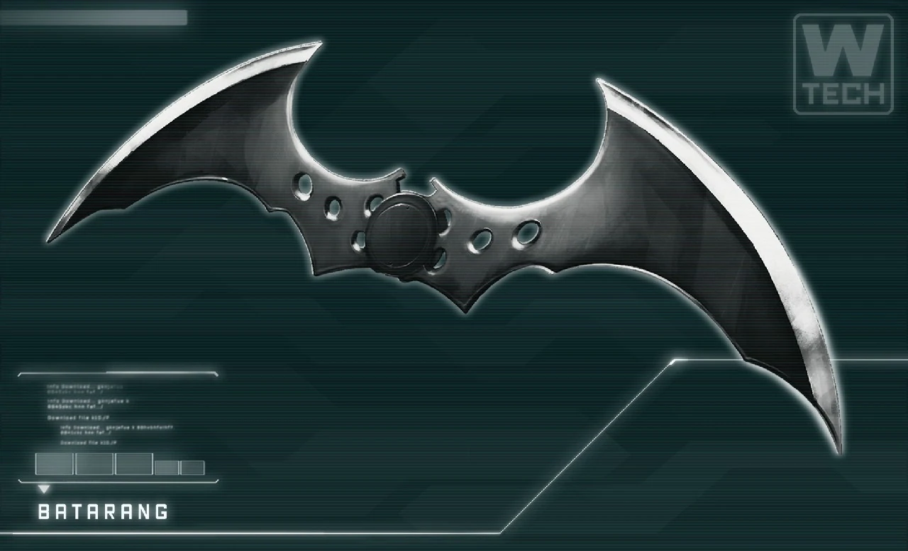
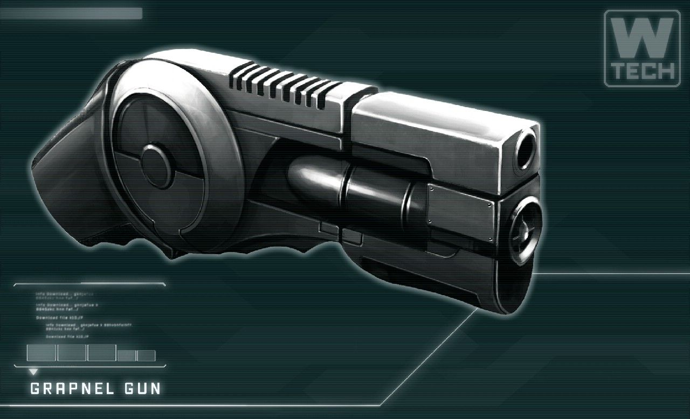

Quien es el nuevo vigilante
Las apariciones del nuevo vigilante son cada vez mas usuales, parece ser un profesional en lo que hace las personas le estan dando el nombre de Batman. Parece no tener superpoderes: recurre a su intelecto, así como a aplicaciones científicas y tecnológicas para crear armas y herramientas con las cuales lleva a cabo sus actividades.
¿Que opinan la gente y las fuerzas policiales del nuevo vigilante ?
"Creo que solo busca ayudar a la gente" - Jim Gordom
Capacidades fisicas y mentales
-
Habilidades como detective.
-
Intelecto nivel genio
-
Brillante estratega y acróbata experto
-
Dominio de artes marciales y técnicas de sigilo e intimidación.
-
Escapismo
-
Conocimiento en uso de equipamiento, dispositivos y armamento de alta tecnología
Sus dispositivos y tecnologia
-
Batiboomerang
objeto arrojadizo
-
Perdigón de humo
esta esfera emitira una capa de humo
-
Bat-garra
un pequeño gancho que le permitira moverse por la ciudad
 si tienes dudas o informacion sobre nuestro nuevo protector
puedes contactarte con nuestra comisaria
si tienes dudas o informacion sobre nuestro nuevo protector
puedes contactarte con nuestra comisaria
 comisariadegotham@gmail.com
comisariadegotham@gmail.com
 acercate a nostros en nuestra
comisaria mas cercana y quitate las dudas
acercate a nostros en nuestra
comisaria mas cercana y quitate las dudas